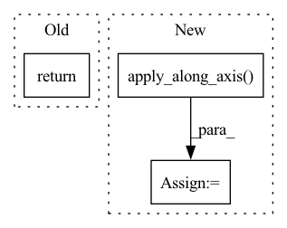

Pattern ID :33929

Before Change
coef_df_lower[COEFFICIENT_DF_COLS.COEFFICIENT] = coef_lower
coef_df_upper[COEFFICIENT_DF_COLS.COEFFICIENT] = coef_upper
return coef_df, coef_df_lower, coef_df_upper
else:
return coef_df
After Change
coef_upper = np.quantile(coef_samples, upper, axis=0)
coef_df[COEFFICIENT_DF_COLS.COEFFICIENT + "_lower"] = coef_lower
coef_df[COEFFICIENT_DF_COLS.COEFFICIENT + "_upper"] = coef_upper
n_pos = np.apply_along_axis(lambda x: np.sum(x >= 0), 0, coef_samples)
n_total = coef_samples.shape[0]
coef_df[COEFFICIENT_DF_COLS.PROB_COEF_POS] = n_pos / n_total
coef_df[COEFFICIENT_DF_COLS.PROB_COEF_NEG] = 1 - n_pos / n_total
return coef_df
In pattern: SUPERPATTERN
Frequency: 3
Non-data size: 3
Instances
Fragment ID: 97190201
Project Name: uber/orbit
Commit Name: d30c66fe818ab7994f0040cb56acf8d29e94c282
Time: 2022-04-01
Author: wangzhishi@users.noreply.github.com
File Name: orbit/template/dlt.py
M Class Name: DLTModel
N Class Name: DLTModel
M Method Name: get_regression_coefs(7)
N Method Name: get_regression_coefs(8)
M Parent Class: ETSModel
N Parent Class: ETSModel
M File Name: orbit/template/dlt.py
N File Name: orbit/template/dlt.py
M Start Line: 716
M End Line: 777
N Start Line: 762
N End Line: 776
'>
Before Change
coef_df_lower[COEFFICIENT_DF_COLS.COEFFICIENT] = coef_lower
coef_df_upper[COEFFICIENT_DF_COLS.COEFFICIENT] = coef_upper
return coef_df, coef_df_lower, coef_df_upper
else:
return coef_df
After Change
coef_upper = np.quantile(coef_samples, upper, axis=0)
coef_df[COEFFICIENT_DF_COLS.COEFFICIENT + "_lower"] = coef_lower
coef_df[COEFFICIENT_DF_COLS.COEFFICIENT + "_upper"] = coef_upper
n_pos = np.apply_along_axis(lambda x: np.sum(x >= 0), 0, coef_samples)
n_total = coef_samples.shape[0]
coef_df[COEFFICIENT_DF_COLS.PROB_COEF_POS] = n_pos / n_total
coef_df[COEFFICIENT_DF_COLS.PROB_COEF_NEG] = 1 - n_pos / n_total
return coef_df
'>
Fragment ID: 97190198
Project Name: uber/orbit
Commit Name: d30c66fe818ab7994f0040cb56acf8d29e94c282
Time: 2022-04-01
Author: wangzhishi@users.noreply.github.com
File Name: orbit/template/lgt.py
M Class Name: LGTModel
N Class Name: LGTModel
M Method Name: get_regression_coefs(7)
N Method Name: get_regression_coefs(8)
M Parent Class: ETSModel
N Parent Class: ETSModel
M File Name: orbit/template/lgt.py
N File Name: orbit/template/lgt.py
M Start Line: 605
M End Line: 666
N Start Line: 650
N End Line: 664
'>
Before Change
color="white" if cm[i, j] > thresh else "black", size=4)
fig.tight_layout()
fig.savefig("./main_confusion.pdf", bbox_inches="tight")
return ax
After Change
def myfunction(x):
return(100 * x/max_size)
domain_x_percentage_in_each_cluster = np.apply_along_axis(myfunction, axis=1, arr=cm)
print(cm)
print("Each cluster has this many sequences:")
num_sequences_per_cluster = np.sum(cm, axis=0)
'>
Fragment ID: 97190196
Project Name: alexandra-chron/hierarchical-domain-adaptation
Commit Name: ee9e1b61ea95be3fa972514cd067e9a9d973dd2a
Time: 2021-10-21
Author: alexandra.xron@gmail.com
File Name: clustering/confusion_matrix.py
M Class Name: AnonimousClass
N Class Name: AnonimousClass
M Method Name: plot_confusion_matrix(7)
N Method Name: plot_confusion_matrix(6)
M Parent Class:
N Parent Class:
M File Name: clustering/confusion_matrix.py
N File Name: clustering/confusion_matrix.py
M Start Line: 61
M End Line: 61
N Start Line: 13
N End Line: 69